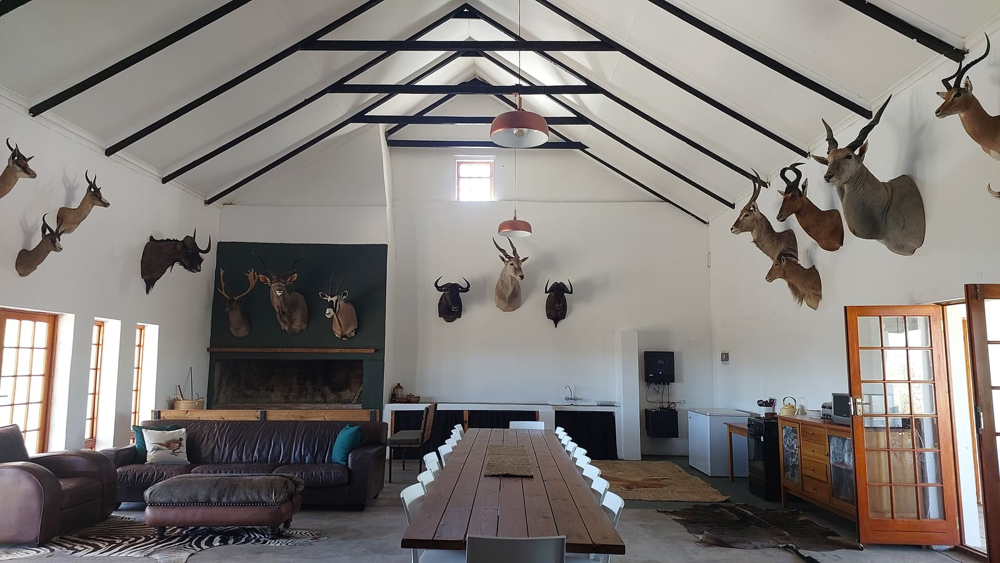

Hartsrust House
Hunting accommodation for up to 16, with a trophy-lined dining and braai room for the whole party.
Sleeps 16
The heart of the farm for your hunting party
Hartsrust House is a spacious base for your Karoo hunt, full of character and traditional South African hospitality. The main living, dining and braai room is hung with trophy mounts and has a long table for the group after a day in the veld.
16Guests maximum
8Min. guests (hunting)
3Bathrooms
4Min. nights (hunting)
House specs
- Sleeps up to 16 guests
- 3 bathrooms: 1 bath, 3 showers, 4 toilets
- Off-grid solar power
- Wi-Fi and DSTV
- Serviced daily
Facilities
- Full kitchen
- Indoor braai area
- Trophy-lined living and dining room with a long table for the group
- Veranda with outdoor seating
Booking
- Self-catering or full catering
- Hunting season: minimum 8 guests, 4 nights and 3 hunting days
- Hunting season: the day fee applies to every guest, hunting or not
- Off-season (October to February): non-hunting guests welcome at our standard accommodation rates


Book Hartsrust House for your hunting party
Need room for more than 16? Book Hartsrust House together with Goodhope for up to 30 guests.